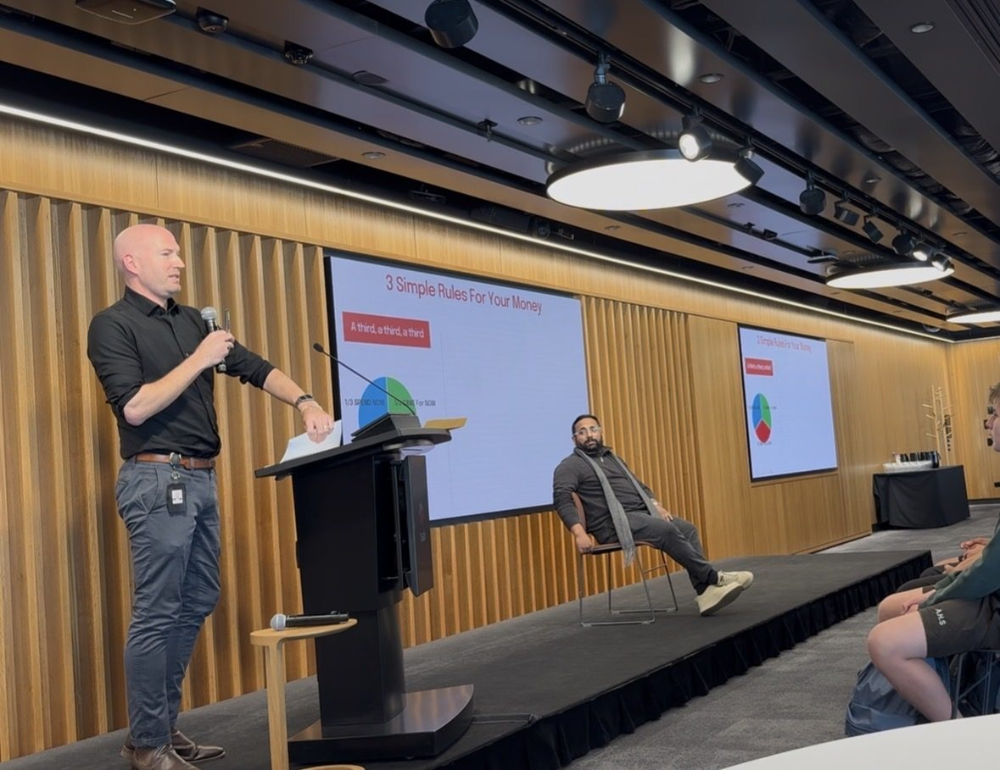
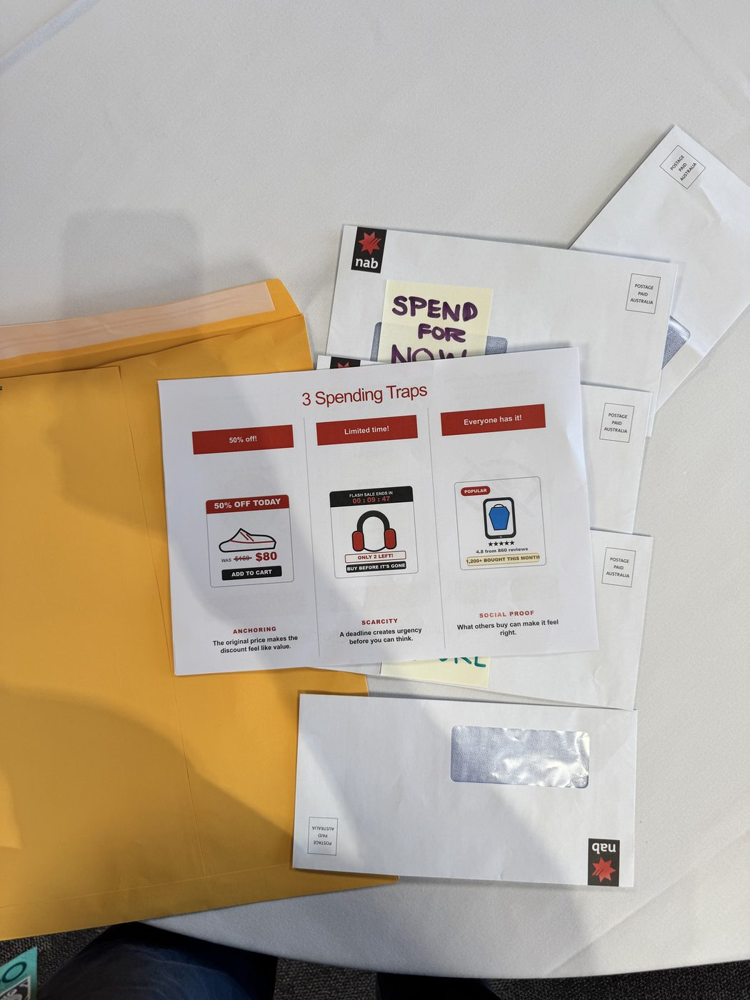
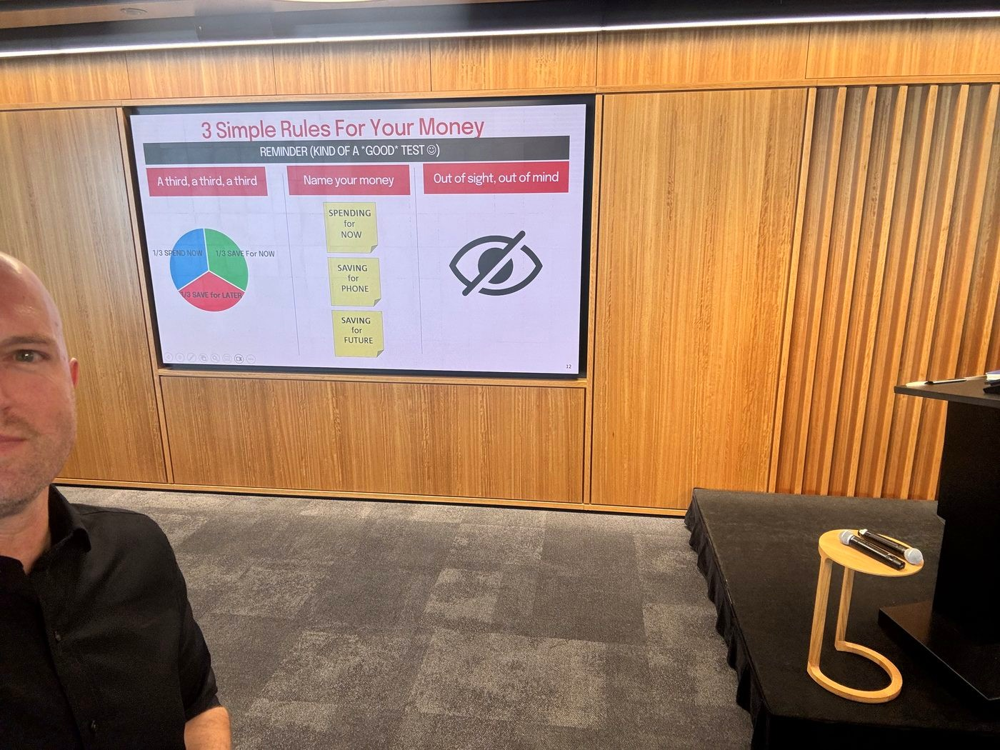

Teaching Year 8/9 students the maths their brains skip
Why do smart 14-year-olds still think “50% off” means they're saving money?
When my own kids ask what I actually do at a bank, the answer that works has never been a sentence — it's a demonstration. I got the same chance with a room of Year 8 and 9 students, and opened with the one that always lands hardest: a $5 chocolate bar, marked down live in front of them.





From the actual session — the envelopes, the handout, and the room.
Wrong question, wrong answer — and that was the point. Nobody in that room had $5 in their hand a minute earlier. They weren't saving $2.50, they were spending it. The $5 was never a real price; it was planted as the number everything else would get judged against — the same mechanic behind every “was $160, now $80” tag in a shop window.
Three saving habits, not a budgeting app
The rules behind the envelopes — simple enough to run without a spreadsheet, a calculator, or an adult checking in.
A third, a third, a third
Split whatever comes in three equal ways before deciding what to do with any of it — a third to spend now, a third to save for something specific, a third to put away for later. No tracking, no app, just one rule simple enough to actually use.
Name your money
Giving each third a label before it reaches your hand — “spending for now,” “saving for phone,” “saving for future” — makes it feel already spoken for. Unlabelled money is money your brain treats as fair game.
Out of sight, out of mind
Hidden savings feel less available and take more effort to reach — which is exactly why they survive. The friction of pulling money back out isn't a flaw in the system; it's the point.
Three spending traps
The same tricks, printed on one slide, that shops and apps use every day — none of them needed to be true to work.
Everyone has it
“4.8★ from 860 reviews, 1,200+ bought this month.” What other people already picked leaks into what feels safe to pick, whether or not it's actually the best option on the shelf.
Limited time!
“Flash sale ends in 09:47, only 2 left.” A countdown or a low-stock label creates urgency to decide before there's time to actually think it over — true shortage or not.
50% off!
“Was $160, now $80.” The struck-through price, not the actual price, does the persuading — the same demo that opened this session, printed onto a product tile.
To a teenager's brain, money isn't a calculator — it's closer to a calculator crossed with Instagram.
What actually stuck wasn't a definition — none of them will remember the word “anchoring” by lunch, and that's fine. What stuck was the moment thirty hands went up for “$2.50 in savings” and got told, on the spot, that they'd just fallen for it. If I ran this again, I'd get real coins into every pair of hands for the envelope demo instead of narrating it from the front — the parts they touched were the parts they argued about afterwards, which is exactly the reaction I was after.
Opened with a $5 chocolate bar, marked down live to $2.50 — 50% off. Asked the room how much they were saving. “$2.50,” hands said. Wrong: nobody had $5 a minute earlier, so nobody was saving anything — they were about to spend $2.50 they didn't have to. That's anchoring, live, and it opened the room up for everything after it.
Wrong question, wrong answer. Nobody had $5 in hand a minute earlier — they were spending $2.50, not saving it.
A third, a third, a third
Name your money
Out of sight, out of mind
Everyone has it
Limited time!
50% off!
To a teenager's brain, money isn't a calculator — it's closer to a calculator crossed with Instagram.
What stuck wasn't the definitions — it was getting the wrong answer out loud, in front of everyone, and having it corrected on the spot.
None of this needs a talk, an envelope, or a spare $5 chocolate bar. Most banking apps already have the pieces — here's how the same three habits map onto features you probably already have access to.
None of this requires willpower. Every step above moves the decision earlier — before the money's in your hand, not after it's already gone.
Two different constraints, same underlying idea: a brand-new customer who's never heard any of this, and a home screen with about four lines to spare.
Split it 3 ways from day one
Most people who do this end up saving more — not because they earn more, but because the decision only gets made once.
Deliberately this small — a wellbeing nudge that respects the screen, not a full-page interruption.